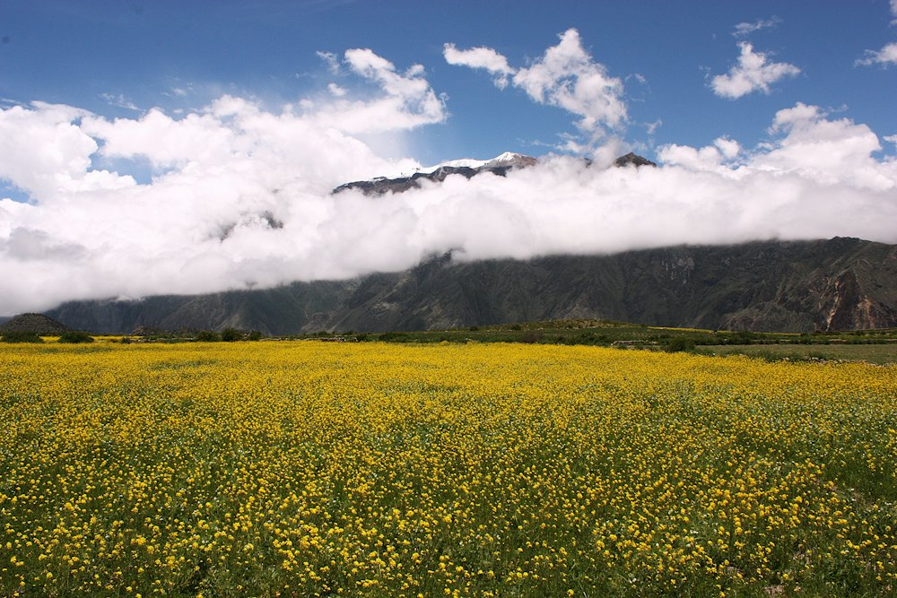

自然历年规律西北
门源油菜花
Menyuan Rapeseed Sea · 青海 · 海北
最佳时间
7 月上中旬盛花（约 7/5 – 7/20）
高海拔花期短，盛花约两周，以门源县花情公告为准。
百里油菜花海：祁连山岗什卡雪峰之下，数十万亩金色花田沿浩门河铺开。
不能错过
- 圆山观景台(青石嘴)看花海+雪峰同框
- 花期短促，出发前盯紧花情报导
当地美食
门源奶皮祁连山牧区双层奶皮，甜咸皆宜
青稞面肠青稞粉灌肠，蒸制蘸蒜醋
蜂糖糕油菜花蜜发糕，花海伴手礼
手抓羊肉浩门镇清真手抓，配蒜醋
旅人提醒
- 高海拔(约 3000 米)避免剧烈运动
- 花田蜂箱多，靠边行走勿触碰
月度热力与气温
-5°
1
-2°
2
5°
3
12°
4
16°
5
19°
6
21°
7
21°
8
17°
9
11°
10
2°
11
-5°
12
适宜度（柱高，5=最佳）依据活动窗口与气候整理；气温为月均高温近似值（°C），仅供规划参考，出行前请查当地预报。
编辑核实笔记 · 整理自门源县历年花情公告，非亲历；花期以当年为准。
预订 / 官网
官方页面：查看官网 / 官方信息 ↗ · 票价与预约以官网为准
联盟链接含占位 tracking id（Booking/Klook/Trip.com），上线替换为真实 ID 即生效；均带 utm 参数与点击统计。